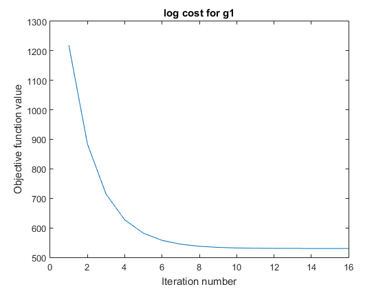

Contents
% Denoising an MRI image of the brain clc; clear all; close all;
Loading the data
load('../data/assignmentImageDenoisingBrainNoisy.mat');
A) Estimation of the noise level
We are extracting the top left patch of the noisy image as the background and then finding the noise level using that
patchSize = 54; background = real(imageNoisy(1:patchSize,1:patchSize)); % figure() % imshow(background) % title('Background patch') sdNoise = sqrt(sumsqr(background)/(size(background,1)*size(background,2))); fprintf('Standard deviation of the noise = %f \n',sdNoise); %sdNoise = 1;
Standard deviation of the noise = 0.066298
B) 1: Denoising using the quadratic function prior
close all; g = @(x) QuadraticFunction(x); alphaRange1 = [0.1:0.1:0.9]; imshow(imageNoisy);
for i=1:length(alphaRange1) alpha = alphaRange1(i); [x,~,~] = GradientDescent(imageNoisy,imageNoisy,g,100,alpha); figure() imshow(x) str = sprintf('alpha = %f',alpha); title(str) end
alpha=0.2; g = @(x) QuadraticFunction(x); [x,logCostArray,iters] = GradientDescent(imageNoisy,imageNoisy,g,100,alpha); denoised_g1 = abs(x); logCost_g1 = logCostArray(1:iters); % figure() % imshow(denoised_g1);
B) 2: Denoising using the Huber function prior
close all; alphaRange2 = [0.3]; lambdaRange2 = [0.1:0.06:0.4]; imshow(imageNoisy); for i=1:length(alphaRange2) for j=1:length(lambdaRange2) g = @(x) HuberFunction(x,lambdaRange2(j)); alpha = alphaRange2(i); [x,~,~] = GradientDescent(imageNoisy,imageNoisy,g,100,alpha); figure() imshow(x) str = sprintf('alpha = %f, lambda = %f',alpha,lambdaRange2(j)); title(str) end end
alpha=0.3; lambda= 0.17; g = @(x) HuberFunction(x,lambda); [x,logCostArray,iters] = GradientDescent(imageNoisy,imageNoisy,g,100,alpha); denoised_g2 = abs(x); logCost_g2 = logCostArray(1:iters); % figure() % imshow(denoised_g2);
B) 3: Denoising using g3()
close all; alphaRange3 = [0.5]; lambdaRange3 = [0.09:0.002:0.1]; imshow(imageNoisy); for i=1:length(alphaRange3) for j=1:length(lambdaRange3) g = @(x) G3Function(x,lambdaRange3(j)); alpha = alphaRange3(i); [x,~,~] = GradientDescent(imageNoisy,imageNoisy,g,100,alpha); figure() imshow(x) str = sprintf('alpha = %f, lambda = %f',alpha,lambdaRange3(j)); title(str) end end
alpha=0.5; lambda= 0.1; g = @(x) G3Function(x,lambda); [x,logCostArray,iters] = GradientDescent(imageNoisy,imageNoisy,g,100,alpha); denoised_g3 = abs(x); logCost_g3 = logCostArray(1:iters); % figure() % imshow(denoised_g3);
B) Create colormap and show images
% Finding the minimum and maximum value of the images for creating a colormap jointImage = [abs(imageNoisy(:)); denoised_g1(:); ... denoised_g2(:); denoised_g3(:)]; minIntensity = min(jointImage); maxIntensity = max(jointImage); % Scaling every image so that [min,max] maps to [0,1] imageNoisy = (abs(imageNoisy)-minIntensity)./(maxIntensity-minIntensity); denoised_g1 = (denoised_g1-minIntensity)./(maxIntensity-minIntensity); denoised_g2 = (denoised_g2-minIntensity)./(maxIntensity-minIntensity); denoised_g3 = (denoised_g3-minIntensity)./(maxIntensity-minIntensity); scale = linspace(0,1,250); cmap = repmat(scale',1,3); % Displaying the images figure(); imshow(abs(imageNoisy)); colormap(cmap); title('Noisy image'); figure() imshow(denoised_g1) colormap(cmap); title('Image denoised using quadratic prior and manual parameter tuning') figure() imshow(denoised_g2) colormap(cmap); title('Image denoised using Huber function prior and manual parameter tuning') figure() imshow(denoised_g3) colormap(cmap); title('Image denoised using g3() and manual parameter tuning')
C) Plotting the objective function values versus iteration
figure() plot(logCost_g1); title('log cost for g1') xlabel('Iteration number') ylabel('Objective function value') figure() plot(logCost_g2); title('log cost for g2') xlabel('Iteration number') ylabel('Objective function value') figure() plot(logCost_g3); title('log cost for g3') xlabel('Iteration number') ylabel('Objective function value')